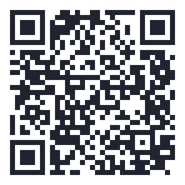

스무 해를 버티게 해 준 것은 언제나 이름 한 줄씩 보태 준 마음이었습니다.
꿈들의 살림은 화려하지 않습니다. 대신 어디에 쓰였는지는 분명하게 말씀드릴 수 있습니다.
그리고 해마다 기부금 모금액과 사용 결과를 공개합니다. 가장 최근 것은 소식의 ‘2025년 기부금 사용 결과’입니다. 먼저 보고 오셔도 좋습니다.
공부방은 매달 들어오는 정기후원으로 한 해 살림 계획을 세웁니다. 만 원도 충분히 귀한 이유입니다.
커피 두어 잔 값으로도 공부방 살림에 보탬이 됩니다.
아이들 간식과 책, 학용품이 떨어지지 않게 합니다.
계절 캠프와 풍물단 수업처럼, 아이들이 오래 기억할 시간을 만듭니다.
금액은 예시일 뿐입니다. 형편에 맞는 액수로, 원하시는 만큼 함께해 주세요. 해지도 전화 한 통이면 됩니다.
농협 301-0207-2141-41
예금주 : 교육성장네트워크 꿈들
일시 후원, 정기 후원 모두 이 계좌 하나면 됩니다. 정기후원은 거래 은행 앱에서 매월 자동이체를 등록해 주시면 됩니다. 신청·변경·해지는 010-2344-4373으로 전화 주세요. 사람이 받습니다.
입금자명을 꼭 남겨 주세요. 저희가 감사 인사를 드릴 방법이 그것뿐이거든요.

휴대폰 카메라로 비추면 이 후원 안내가 열립니다. 포스터나 소식지에 넣어 주변에 알려 주셔도 큰 도움이 됩니다.
기부금 영수증은 문의 주시면 챙겨 드립니다. 후원금이 어떻게 쓰였는지는 아래에서 언제든 확인하실 수 있습니다.
아이들과 놀아 주는 시간도, 공부방을 고치는 손재주도, 나눠 주는 재능도 모두 후원입니다. 실제로 지금의 공부방 건물은 지역 기업과 봉사자들의 손으로 지어지고 고쳐졌습니다. 자원봉사와 물품·재능 기부는 문의 페이지나 전화로 편하게 말씀해 주세요.